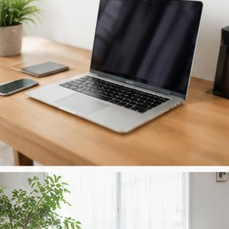
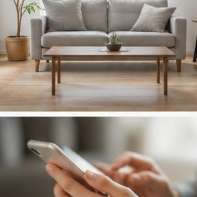

💻 テレワーク生産性診断
在宅環境・習慣からリモートワークの課題と改善策を診断
- 質問数：5問
- 所要時間：約1分
📊 カテゴリ別スコア比較
使い方（5ステップ）
ページを開く
このページにアクセスする
診断スタート
「診断スタート」をタップ
5問に回答
質問に順番に答える（約1分）
スコア確認
生産性スコアと分析を見る
改善案を実践
アドバイスを日常に取り入れる
診断結果サンプル
総合スコア
良好なテレワーカー
※サンプル表示
カテゴリ別スコア（サンプル）

❓ よくある質問
Q: 診断履歴はどこに保存されますか？
A: 診断結果はブラウザのlocalStorageに自動保存されます。ブラウザのサイトデータを削除すると履歴が消えます。
Q: 過去の診断履歴を削除したいのですが？
A: 結果画面の「この診断結果を削除」ボタンで個別削除、または下の「全履歴を削除」ボタンですべて削除できます。
📊 診断履歴の管理
診断結果はブラウザに自動保存されます。最新10件まで保持されます。
⚠️ 本ツールの結果は参考情報です。専門的判断は資格を持つ専門家にご相談ください。

📋 このツールの詳細
「テレワーク生産性診断」は、在宅環境・集中力・コミュニケーション頻度からテレワーク生産性を診断して改善点を提案。
このツールでできること
テレワーク時の集中時間・タスク完了率・会議時間の割合を入力すると、生産性スコアと改善ポイントをフィードバックします。ポモドーロ・テクニックなどの時間管理手法の活用ガイドも提供します。
活用シーン・使い方
テレワークでの業務効率を定量化したい方や、上司・会社へ生産性を証明したい方に活用できます。チームのテレワーク生産性管理や、個人の働き方の振り返りにも役立ちます。
注意点・補足
生産性の計測は入力データの精度に依存します。業務の性質によって適切な指標は異なります。過度な数値管理は逆効果になる場合があります。
キャリア・転職の実態データ（厚生労働省）
厚生労働省の雇用動向調査などをもとに、転職・副業・キャリア形成の現状を整理しました。
| 項目 | データ | 出典 |
|---|---|---|
| 転職者数（2023年） | 約311万人（前年比8万人増） | 厚生労働省「雇用動向調査」2023年 |
| 副業・兼業容認企業の割合 | 約55%（大企業を中心に増加傾向） | 厚生労働省「就業形態の多様化に関する調査」 |
| 転職後の年収増加割合 | 約41.4%が増加 | リクルートワークス研究所「全国就業実態パネル調査」 |
| 正社員の平均勤続年数 | 男性14.1年・女性10.5年（2023年） | 厚生労働省「賃金構造基本統計調査」2023年 |
📖 あわせて読みたいコラム記事
⚠️ 計算結果の活用にあたって
よくある質問
- Q: どんな人におすすめのツールですか？
- テレワーク生産性Webツールを検討している方、現状を客観的に整理したい方に最適です。キャリアの方向性を考えるきっかけとしてご活用ください。
- Q: 診断・計算結果はどのくらい信頼できますか？
- 一般的な市場データ・統計をもとにした参考値です。実際の状況は個人の経験・スキル・市場環境により大きく異なります。
テレワーク生産性診断の活用ガイド（無料Webツール）
在宅環境・集中力・コミュニケーション頻度からテレワーク生産性を診断して改善点を提案。登録不要・完全無料でご利用いただけます。スマホ・PC対応。。登録不要・完全無料でご利用いただけます。スマートフォンやタブレットからもアクセス可能です。
こんな方におすすめ
- すぐに手軽に使いたい方
- 登録不要で利用したい方
- スマートフォンでも使いたい方
よくある質問
Q. データはどこに保存されますか？
A. 入力した情報はお使いのデバイス内のみで処理され、サーバーには送信されません。
Q. スマートフォンで使えますか？
A. はい、スマートフォン・タブレット・PCすべてに対応しています。